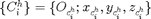
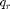
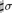
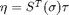
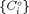

SoftGrasp Concepts and Workflow
Contents
Basic Assumptions
SoftGrasp relies on the analytical framework introduced in [12] and extensively explained in [14], which draws upon previous works on whole-body defective grasps [8], [15], [16] and assumes the contact information is known, by either planning (from e.g., OpenRAVE/OpenGRASP) or sensing.
A basic assumption is that all bodies are modelled as rigid. Thanks to this, it is possible to use the wide variety of mathematical tools developed to describe rigid body motions. Compliance, e.g. the softness of the contact fingertips and/or the grasped object, is modeled through virtual springs.
SoftGrasp deals with modeling, analysis and optimization of quasi-static grasps and dynamic effects such as viscous damping, are disregarded in the model. Note that dynamics do not typically play a major role in the control of grasping, where motions are usually slow.
The investigation of the system capabilities, e.g. the contact forces on the object actually controllable by the hand, is separate to the restriction imposed by the friction limits, and it is assumed that a subsequent classical force optimization procedure can lead to a feasible solution. In other words, the grasp analysis is performed in the assumption that the system of forces grasping the object is force closure, ensuring that grasping forces can always be exerted on the object such that both balance equations and contact force constraints are not violated. SoftGrasp provides methods for checking force-closure and for controlling grasping forces so as to avoid the violation of contact constraints in general cooperating mechanisms.
Synergistic Underactuated Robotic Hands Grasping Objects
Note An in-depth description of the mathematics behind SoftGrasp is out of the scope of this documentation. Readers are strongly encouraged to refer to [14] for a rigorous exposition of the math underlying the Underactuated Robotic Grasping. |
With reference to Fig. 1, a hand is modeled as a collection of serial robots called limbs (simple chains of links connected through revolute or prismatic joints) manipulating an object. An inertial frame  is attached to the palm. A reference frame , referred to as the body frame, is fixed on the grasped object. The object is in contact with all or some of the links of the limbs and, eventually, the palm. No distinction is made whether the contacting links are at the extremities of the limb or not.
is attached to the palm. A reference frame , referred to as the body frame, is fixed on the grasped object. The object is in contact with all or some of the links of the limbs and, eventually, the palm. No distinction is made whether the contacting links are at the extremities of the limb or not.
On the i- th of the p contact points, a frame  is attached to the finger link and a frame is attached to the object. These frames play a key role in the mathematical description of the hand/object interaction, more specifically, in the computation of the Grasp matrix, the hand Jacobian matrix and the wrench bases, that play a key role in the definition of the equilibrium and congruence equations of hand and object.
The contact between the hand and the object can be interpreted as a motion constraint. Typically, depending on the nature of materials involved, not all the directions of motions are limited. For the case of contact point without friction, only the direction normal to the contact surface is forbidden; the hard finger, allows the presence of three components of force, on the contact, but no moment; the soft finger adds the possibility to transmit a moment around the normal vector to the contact surface. The hard–finger model is used when there is significant contact friction, but the contact patch is small, so that no appreciable friction moment exists. The soft–finger model is used in situations in which the surface friction and the contact patch are large enough to generate significant friction forces and a friction moment about the contact normal.
In general, there are more motion constraints than degrees of freedom and this makes the grasping system statically indeterminate (or hyperstatic). To address this problem, a contact force model is adopted which is linear in the interference between the hand and the object. A virtual contact spring is considered as interposed between the link and the object at each contact point. For the i-th contact, the characteristics of the virtual spring are described by a constant stiffness matrix where is the number of (motion) directions constrained by the contact.
For the i- th joint an elastic model is adopted, that relates the real configuration with a reference value, , described by a torsional spring with constant stiffness
Underactuation of the Hand is modeled by imposing that the joint
reference positions  evolve on a manifold as a function of some postural synergy values , where , with  being the number of synergy variables and the number of
joint variables. Mathematically, this is expressed by . By
differentiation, it follows that , where . The generalized forces at
synergy level are related to the joint torques by .
Similarly to the joint actuation model, an elastic model is adopted also
for the synergistic underactuation, where synergy reference is related
to the postural synergy through a constant synergy stiffness  , i.e., .
, i.e., .
Closed–Chain Mechanisms With Unactuated Joints
SoftGrasp Modeling Concepts
Note SoftGrasp classes follow the handle semantics. See handle and the references therein for an in-depth explaination of this semantics. |
The above concepts of limb, hand and object have a direct counterpart in SoftGrasp. They are represented by instances of the classes Limb, Hand and ManipulatedObject, respectively.
A Limb object contains the kinematic description of a limb. An extensible design approach known as Factory Method Pattern [17] allows to add support for arbitrary kinematic-description conventions, without requiring any modification to the Limb class. Support for screw-theory-, Denavit-Hartenberg- and URDF-based (serial) robot descriptions is already provided by SoftGrasp.
A Hand is made up of a collection of Limb objects. An homogeneous transformation represents the inertial frame attached to the palm. Hence, a Hand object encapsulates the complete geometrical description of the hand model.
A ManipulatedObject instance contains an homogeneous transformation that represents the body frame .
Note that, since SoftGrasp assumes that the contact information is known, the information about the actual shape of links and/or objects (that play a key role in software simulations such as collision detection and contact determination) is not required.
To represent the contact information, different concepts are defined. One that plays a basic role in the contact definition procedure is the Point Of Interest, or POI. A POI is represented by an instance of the class POI, which embeds information about position and orientation of a normalized Gauss frame attached to the point itself and expressed in local coordinates, i.e., with respect to the fingerpad or the manipulated object, depending on where the point is placed. When placed onto a link, the POI can be used to model the location of a contact with an object in a grasp and the normalized Gauss frame represents . When placed onto the object, the POI can be used to locate a point of contact with a hand in a grasp and the normalized Gauss frame represents .
Glove and Cover classes encapsulate the information that specifies how a collection of POI instances is associated to a given Hand or ManipulatedObject instance, respectively. A Glove instance matches the concept of a coating to be applied to the hand and decorated with a number of POIs drawn at specific locations on the finger phalanges (Fig. 2). A Cover instance matches the concept of a coating to be applied to the object and decorated with a number of POIs drawn at desired locations (Fig. 3).
The (conceptual) gloved hand in Fig. 2 is represented by a HandWithGlove instance. In other words, the aggregation of a Hand instance with a Glove instance is specified by an object of type HandWithGlove. Similarly, the aggregation of a ManipulatedObject instance with a Cover instance is specified by an object of type ObjectWithCover, which represents the (conceptual) covered object in Fig. 3.
The information on the contact locations expressed by POI, Glove and Cover instances must then be complemented by contact properties such as, e.g., constrained motion directions, contact stiffness and frictional attributes. These properties are encapsulated in concrete specializations of the Contact class. The classes HardFingerContact, SoftFingerContact and CompleteConstraintContact are already included in SoftGrasp to enable modeling of hard/soft finger and complete-constraint concepts, respectively.
To complete the specification of the contact information, POI objects of both the Glove and Cover instances must be suitably paired and each pair must be associated to a kind of Contact. This is done by using one instance of the ContactStructure class. This class encapsulates the information of which POI object on the Glove instance is paired to which POI object on the Cover instance, and which contact properties are assigned to each pair of points (Fig. 4).
Glove, Cover and ContactStructure classes decouple the hand and object model from the complete specification of contact information, which is specific to a grasp task. In this way it is possible to use the same Hand and ManipulatedObject instances to model any number of grasping configurations (Fig. 5).
SoftGrasp Tools for Grasp Analysis and Optimization
The concepts and the modeling procedures above enable the specification of the models and data needed to perform analysis and control of grasping. Analysis and optimization functionalities are not provided by a single-class implementation. Rather, they are organized in composable solvers, in order to avoid too deep class hierarchies and hence enhance extensibility, maintainability and foster code reuse.
Fig. 6 shows a (simplified) UML class diagram view that summarizes the available solvers in SoftGrasp and the relationships among them.
The GraspSolver class provides essential functionalities common to all the analysis solvers, such as the computation of the Grasp matrix, the hand Jacobian matrix and the wrench bases. GraspSolver is an astract class and hence cannot be instantiated directly; three concrete specializations are provided by SoftGrasp.
ClosedChainsSolver is a kind of GraspSolver that computes the above manipulability subspaces, both in the kinematic and in force domain, of rigid-body closed-chain mechanisms with passive joints.
GraspAnalysisSolver is a kind of GraspSolver that TODO
GraspClassificator is a kind of GraspSolver that provides a basic classification of grasping systems, as in [19]. The classification provides insight into the physical meaning of the null spaces of the Grasp matrix and the hand Jacobian matrix. It can be used as a basis to implement further grasp classification criteria for advanced planning and/or reasoning.
The GraspForceOptimizer provides the functionality to compute an optimal distribution of the grasping forces according to the unconstrained minimization approach with barrier strategy described above. Instances of this solver are initialized with two results from the GraspAnalysisSolver, i.e., the matrices representing the subspace of controllable internal forces and the contact force transmission of the external wrench. The ContactStructure instance of GraspAnalysisSolver is also required as input parameter by the GraspForceOptimizer constructor. In this way, all the contact information is accessible to the internal optimization routines of the GraspForceOptimizer instance.